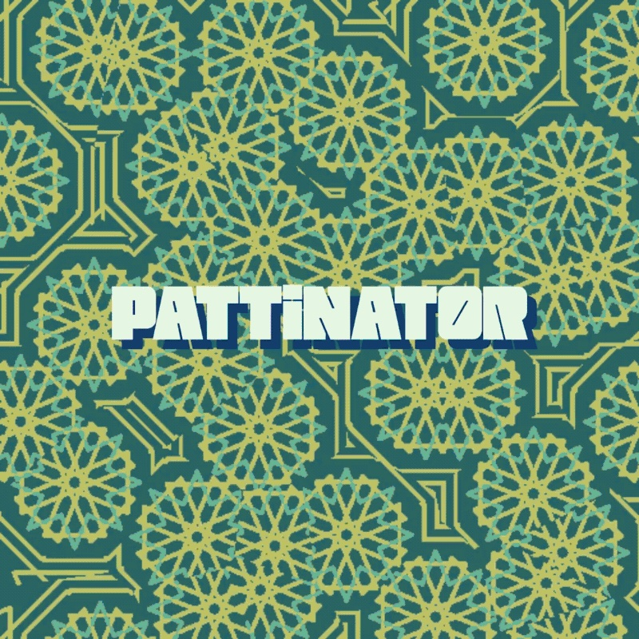
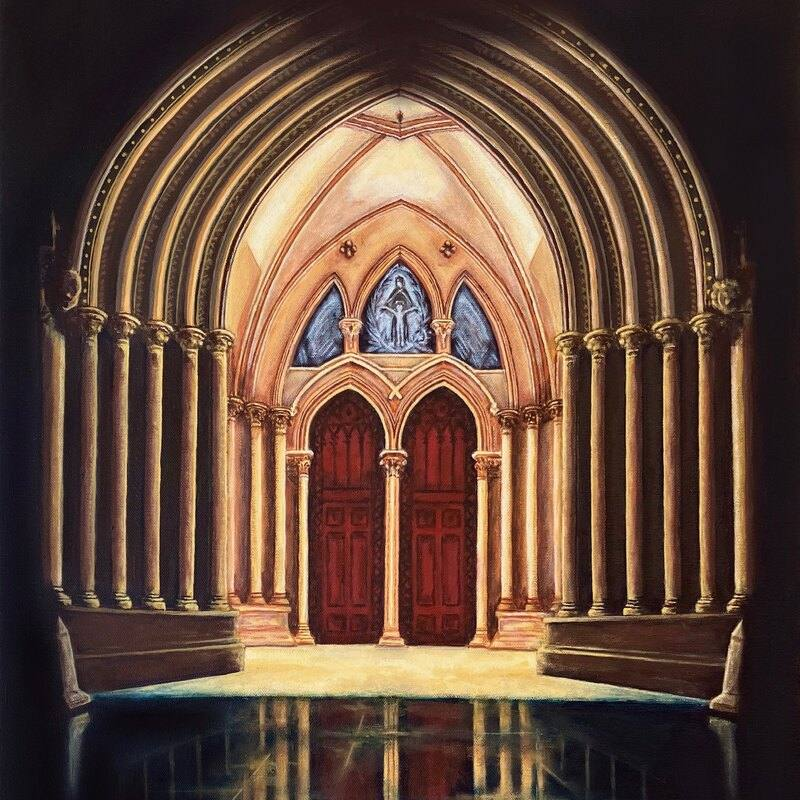
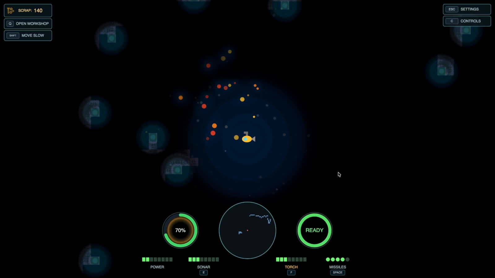
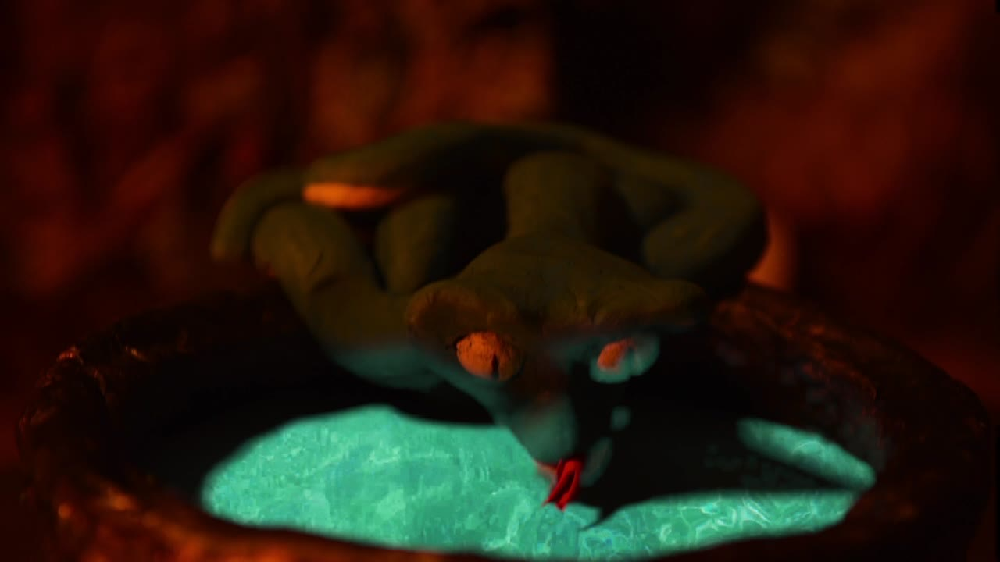
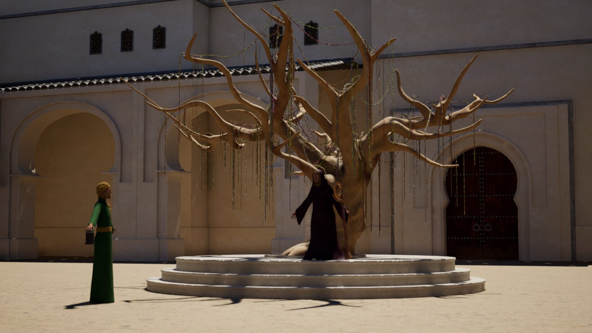
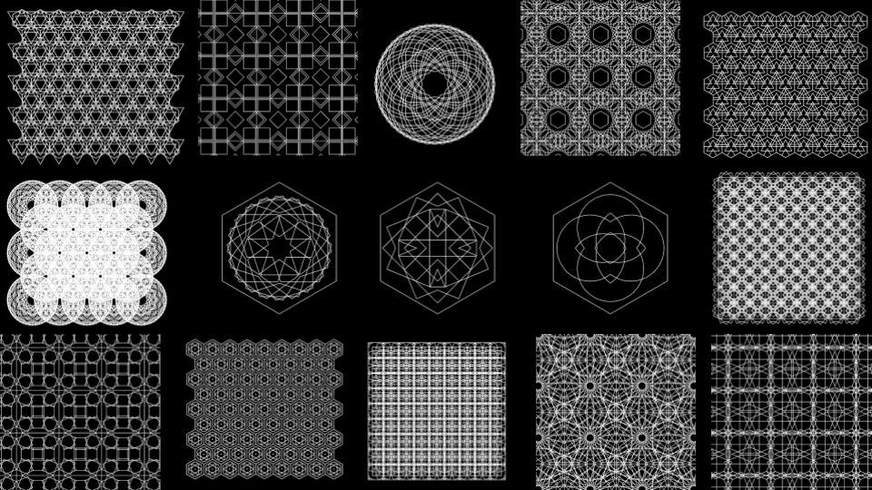
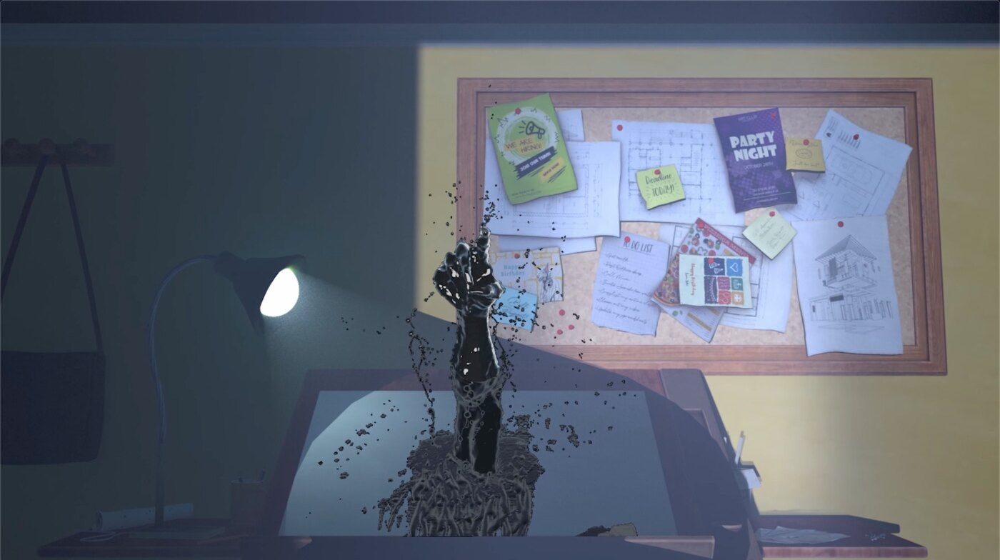
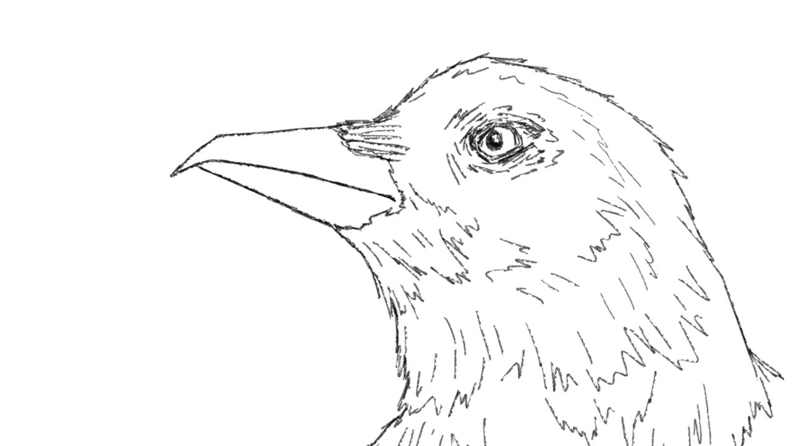
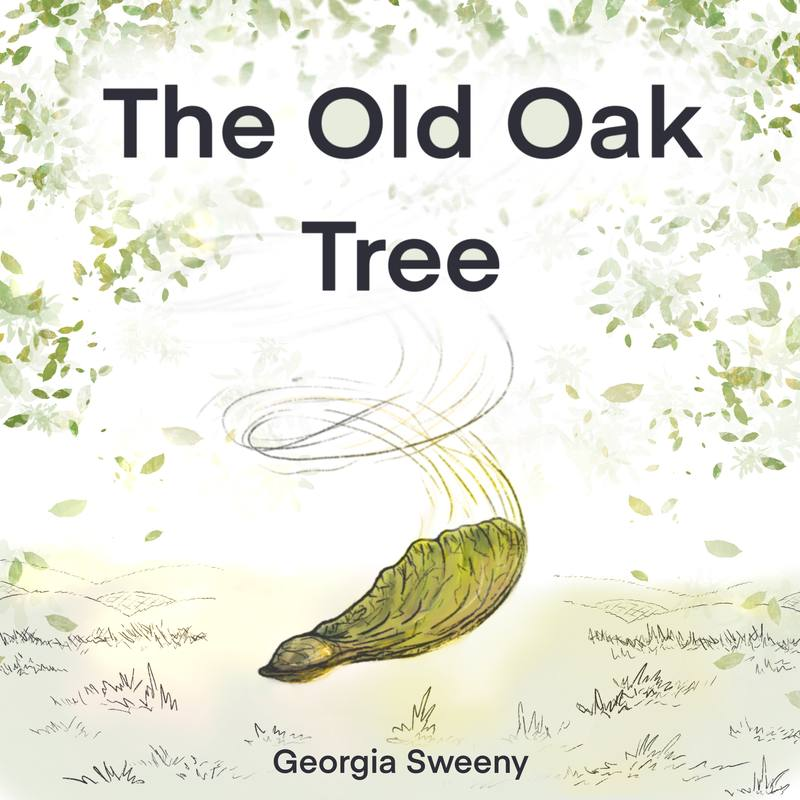
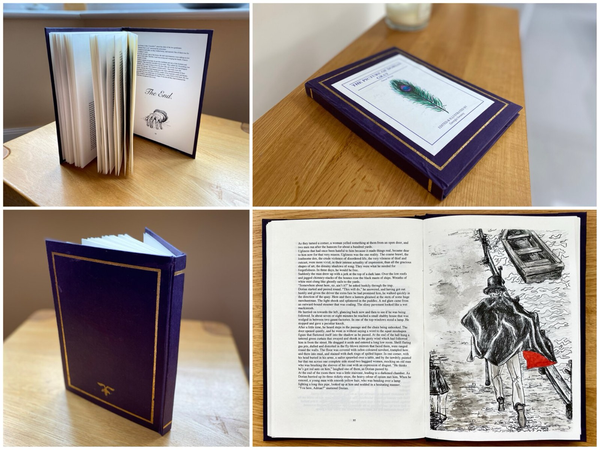

Interface design and research · 2026
Pattinator
MSc dissertation: an interactive node-graph app that makes generative pattern algorithms readable to non-coders.
View project →
Print and illustration · 2018–2025
Christmas card range
Nine original designs, one chosen by the Mayor of St Albans and one that won the St Albans Art Society Trophy.
View project →
Game lighting and level design · 2026
The Abyss
All the lighting and level design for a sonar-navigation game, built by a six-person team I led as Product Owner.
View project →
Stop motion · 2021
Infortunatus Mutatis
A stop-motion short about a potion that goes badly wrong — built, lit and shot frame by frame.
View project →
3D environments and film · 2024
The Tale of Capturing the Sun
An original fable storyboarded, modelled, lit and rendered across three environments in Unreal Engine.
View project →
Procedural design · 2024
Islamic pattern generator
A Houdini tool that lets artists build Islamic geometric patterns from the traditional construction rules, without touching the node network underneath.
View project →
3D animation · 2022–23
The Blot
A 3D animated short about an architect whose creative block takes physical form. A group film, made over two years.
View project →
2D animation · 2021
Witness
A hand-drawn 2D short, made as my Art Foundation final project.
View project →
Book illustration and layout · 2021
The Old Oak Tree
An original picture book written, illustrated and typeset from scratch — a story about a lonely oak tree and the seed that grows beside it.
View project →
Book illustration and layout · 2018–19
The Picture of Dorian Gray
A self-initiated illustrated edition for 9–11 year olds, made as part of an A*-graded research project on using illustration to bring classic literature to younger readers.
View project →